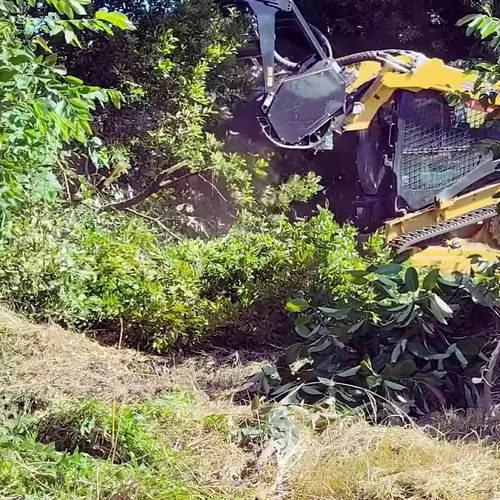
Débroussaillage et défrichement
Friches, ronces, broussailles et terrains à l'abandon remis au propre.
Nouveauté 2026 Broyeur forestier Caterpillar
Broyage forestier et espaces verts dans le 66 et le 11.
5,0sur Google · 17 avisLa machine · Nouveauté 2026
Une chargeuse CAT sur chenilles, équipée d'une tête de broyage forestier. Elle avance dans la friche et laisse derrière elle un terrain propre, en une seule passe.
Fiche machineCAT · Broyage forestier
Envoyez des photos de votre terrain, on vous dit si le CAT peut le faire.
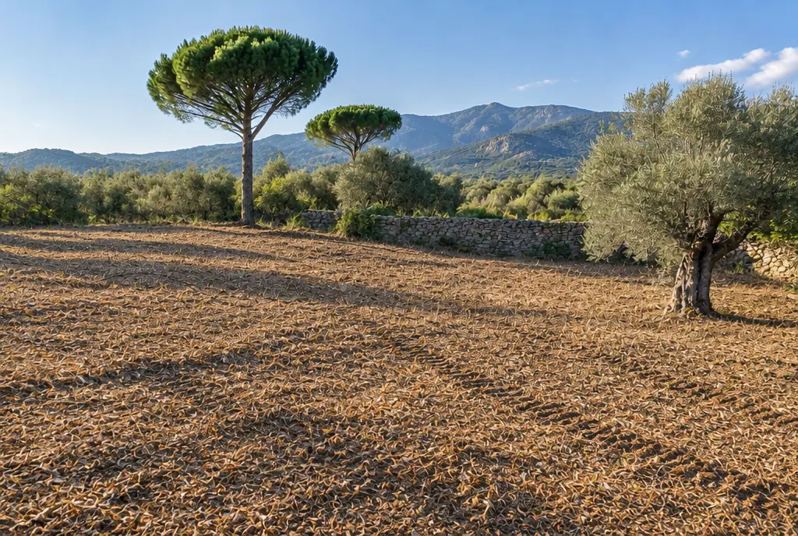
Faites défiler
Regardez le terrain se nettoyer.
0 % du terrain broyé
Les pins, l'olivier et le muret sont conservés : on ne broie que ce que vous voulez enlever.
Pour qui
Friches de plusieurs hectares, vergers à arracher, bords de route, terrains à remettre en état : le broyeur est fait pour les surfaces que personne ne veut attaquer à la main.
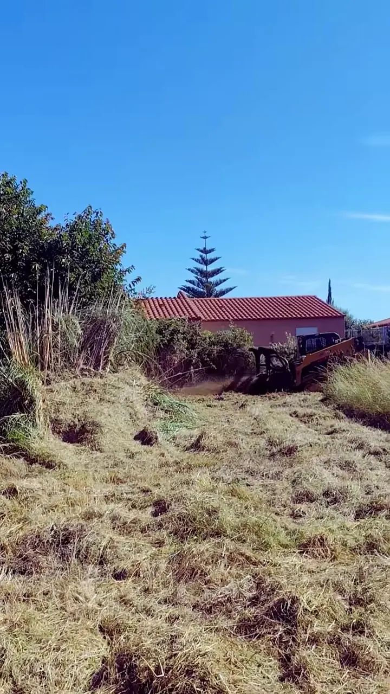
Communes et collectivitésFriches, bords de route, espaces publics à entretenir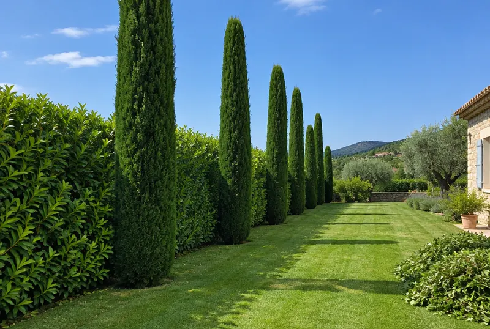
CampingsDébroussaillage, entretien des espaces verts et des haies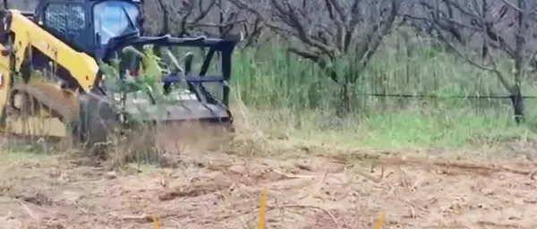
AgriculteursArrachage de vergers, dessouchage, friches agricoles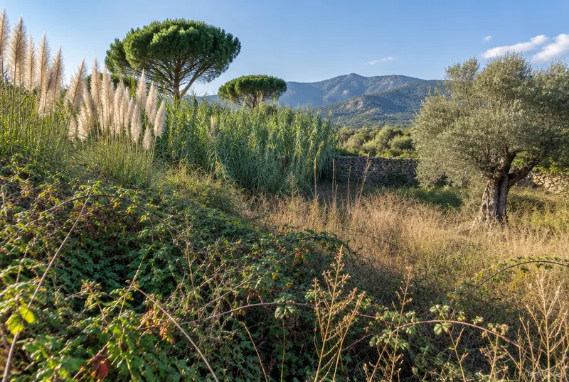
Particuliers avec un grand terrainPréparer avant une clôture, une piscine, un gazon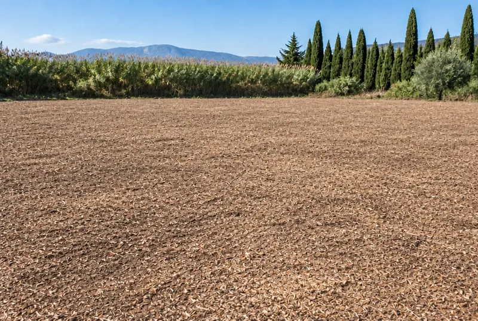
Terrains à vendreUn terrain propre se visite mieux et se vend mieux Votre cas n'est pas dans la liste ?Envoyez une photo de votre terrain : on vous répond franchement si c'est faisable.Demander un devis →Avant / Après
Friche envahie → terrain propre. Ronces, pampas et cannes broyées en une passe de CAT. Arbres et muret conservés.
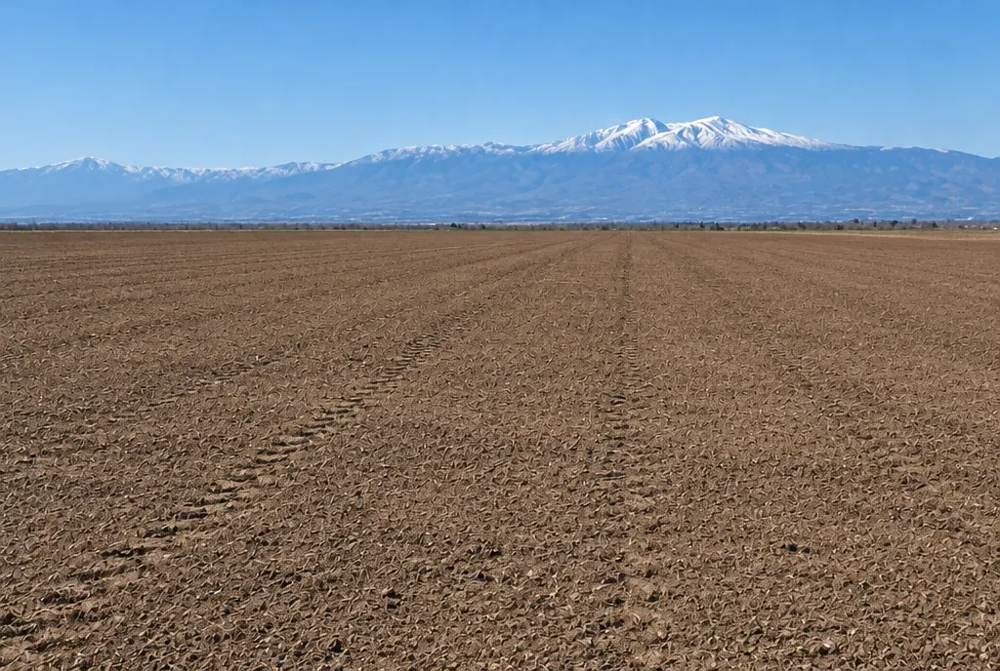
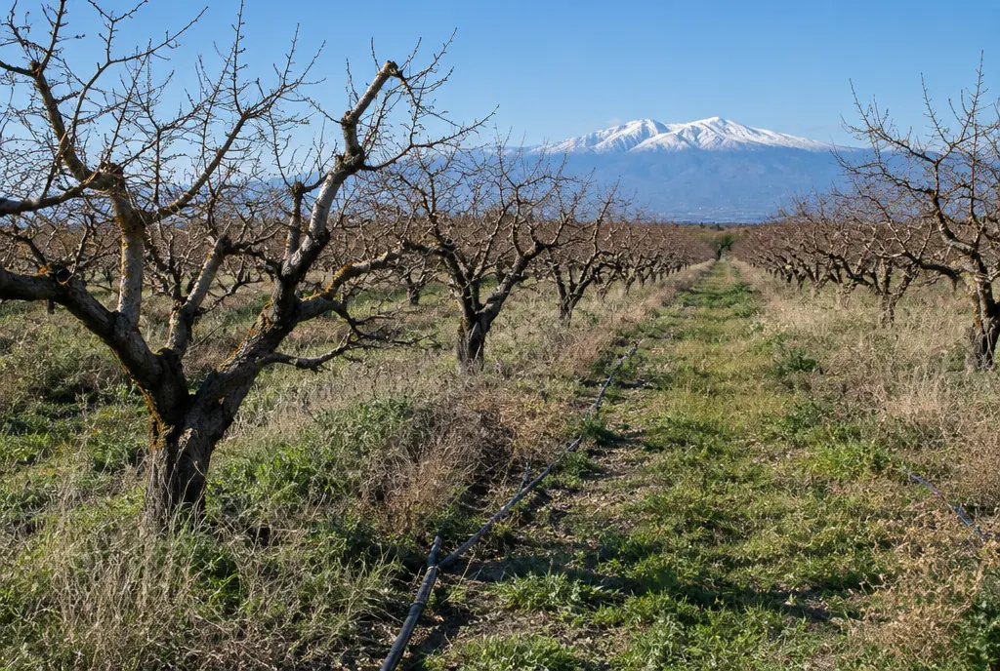
AvantAprèsVerger à arracher → terre prête à replanter. Arrachage, dessouchage et remise au propre du terrain.
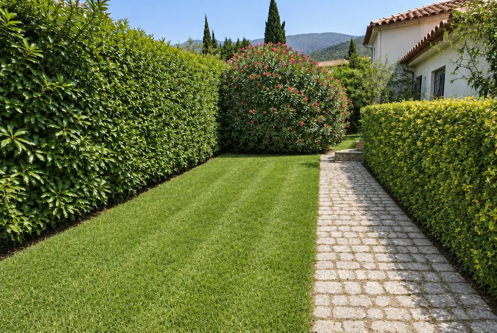
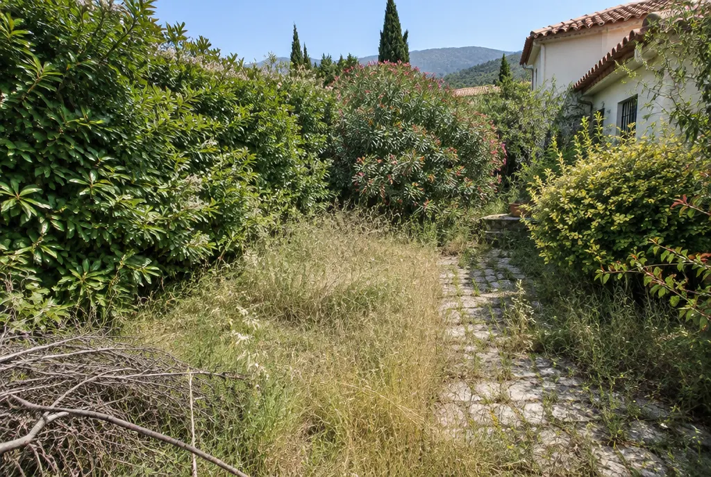
AvantAprèsJardin à l'abandon → jardin net. Taille des haies, tonte, nettoyage et évacuation des déchets verts.
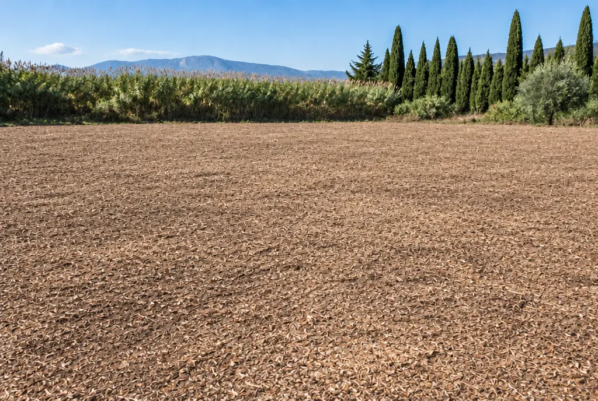
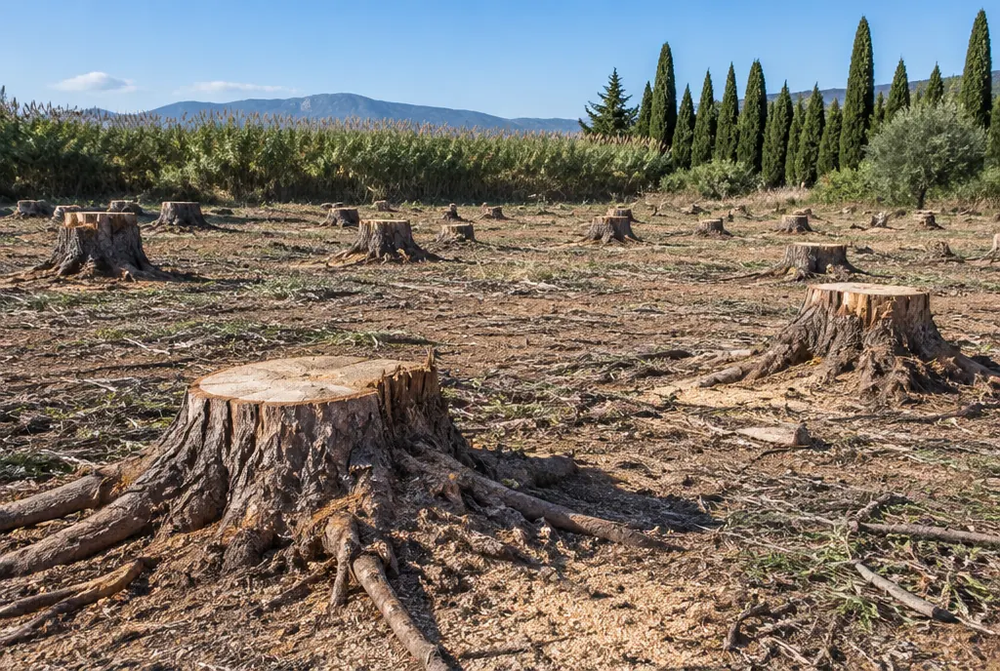
AvantAprèsSouches → terrain dessouché. Souches et racines retirées, sol remis à niveau, prêt pour un gazon.
Simulateur
Indiquez la surface de votre terrain et le type de végétation. Le simulateur compare le CAT et la débroussailleuse, sur la base de notre repère de terrain : 3 h de CAT = 3 jours à la débroussailleuse.
Estimation indicative, pour vous donner un ordre d'idée. Le temps réel dépend de la pente, de l'accès et de la végétation : le devis, lui, est précis et gratuit.
Espaces verts
Artisan paysagiste depuis bientôt 20 ans, Henri Doutres s'occupe de tous les travaux extérieurs, avec son équipe et son propre matériel.

Friches, ronces, broussailles et terrains à l'abandon remis au propre.
Exemple réel : 3 000 abricotiers arrachés, dessouchés et terrain remis au propre pour un agriculteur.
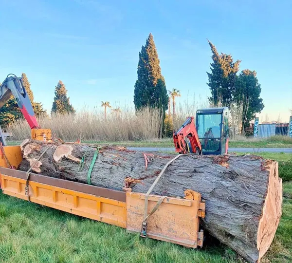
Abattages délicats, y compris en urgence après une tempête. Évacuation des troncs au camion-grue.
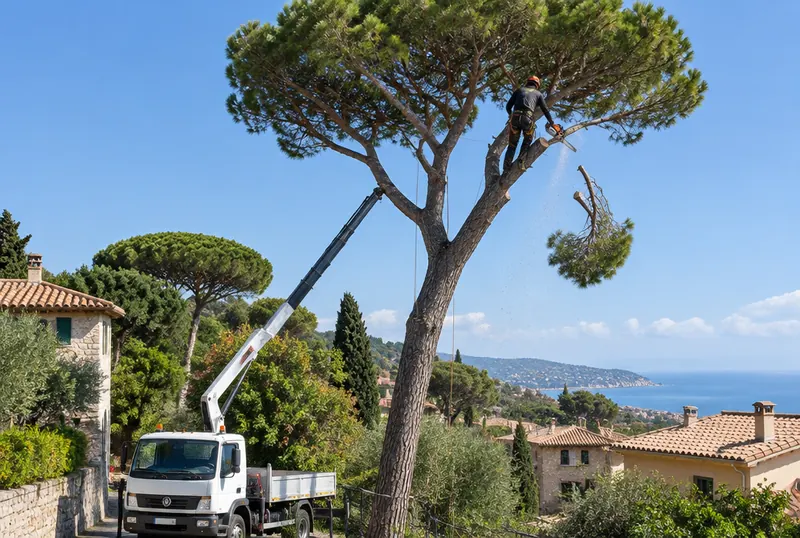
Taille et mise en sécurité des grands arbres, pins, cyprès et palmiers.
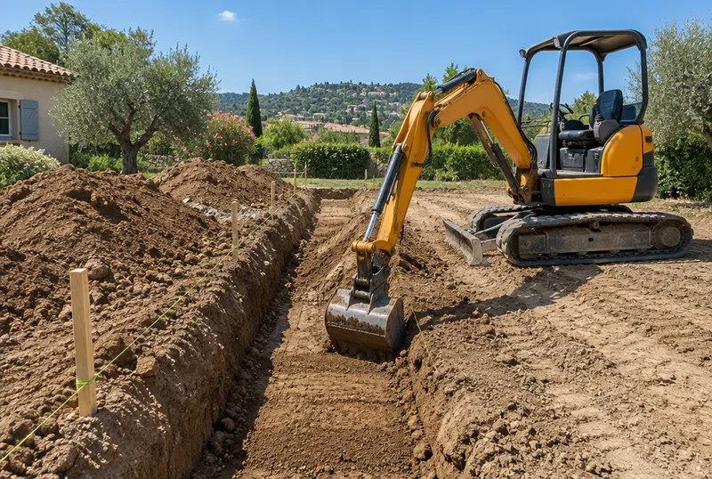
Préparation de terrain, nivellement et tranchées à la mini-pelle.
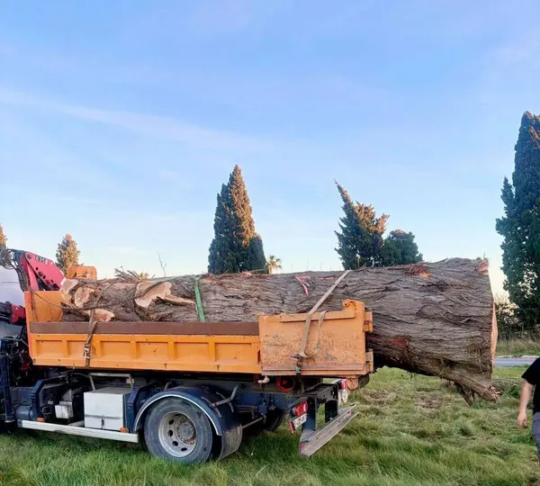
On repart avec tout : branches, troncs et souches, au camion polybenne.
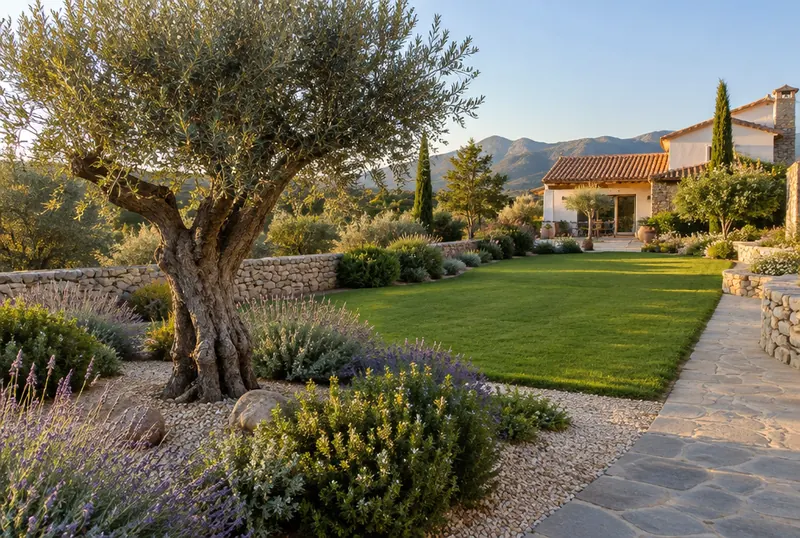
Plantation, choix des arbres et des végétaux adaptés au climat du Roussillon.
Taille de haies, tonte, contrat d'entretien à l'année. Chez les particuliers, l'entretien peut ouvrir droit à un crédit d'impôt selon les prestations éligibles.
Notre matériel
Réalisations
Arbre tombé, arbre dangereux
Arbre sur la toiture, sur la clôture ou sur la voie publique : l'équipe se mobilise pour mettre les lieux en sécurité, abattre, débiter et évacuer.
Urgence : appeler le 06 84 87 61 80« Très Professionnel, ultra compétent travaillant avec une équipe rigoureuse. Nous le remercions pour son intervention rapide chez nous après la tempête Nils pour l'abattage délicat d'un énorme pin ayant abîmé notre toiture […] Nous recommandons vivement Monsieur DOUTRES Henri »
Avis Google
« Suite à la tempête du 12 février, une douzaine d'arbres est tombée sur ma parcelle de Claira. […] Satisfaction, soulagement et donc sécurité des lieux. Et ce grâce au professionnalisme de cette entreprise malgré la difficulté de départ. Bravo à lui et à son équipe. »
« Arrachage de 150 souches d'abricotiers. Affaire rondement menée en moins d'une journée de travail. Travail propre, net et sans bavure. La cerise : un tarif des plus correct. Je recommande les yeux fermés. »
« L'abattage a été réalisé en toute sécurité, le terrassement est précis et bien exécuté, et les travaux ont été menés avec rigueur, efficacité et propreté. Le terrain a été rendu propre à la fin du chantier […] Un artisan de confiance, rare aujourd'hui. »
« Mon cyprès menaçait de tomber sur la clôture et/ou voiture et voie publique. […] l'entreprise Doutres était là, quasiment de suite pour abattre le cyprès et déblayer le tronc et tout le reste !!!! Efficacité, professionnalisme, et disponibilité ! Je recommande absolument. »
« Entreprise sérieuse et très réactive. Nous faisons appel à cette entreprise depuis plusieurs années. […] M. Doutre a toujours été de très bons conseils pour les travaux et le choix des arbres à replanter. »
« Excellents conseils en amont de la prestation. Travaux de qualité, au-delà de nos attentes. Équipe sympathique et compétente. Cette expérience nous a conduit à mettre en place un contrat d'entretien. »
« L'équipe est professionnelle, réactive et à l'écoute, et a su transformer mon espace extérieur avec beaucoup de savoir-faire et de soin. »
Zone d'intervention
Nous intervenons autour de Claira et dans les Pyrénées-Orientales pour tous les travaux. Le broyeur forestier se déplace aussi dans l'Aude.
Claira · notre base, 31 chemin du Mas Bordas
Devis gratuit
Pas besoin d'être à l'aise avec Internet : cliquez sur les gros boutons, ajoutez une photo si vous pouvez, c'est tout.